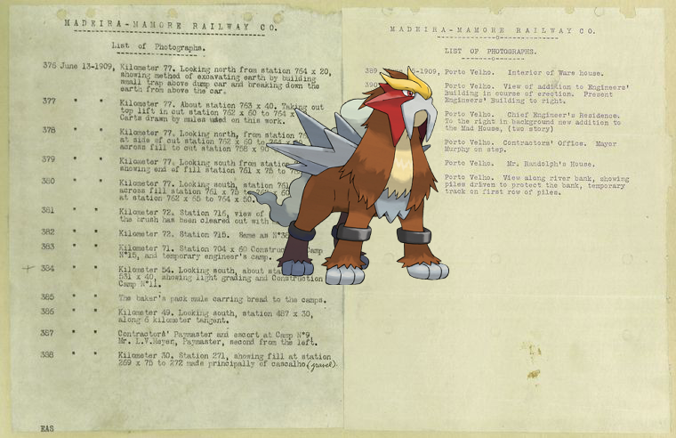

-

-
![Fletchinder on Letter to Tapping Reeve [Litchfield]. http://digitalcollections.nypl.org/items/ab4c2760-c52d-012f-7639-58d385a7bc34](media/finding-hMlZndGX.png) Fletchinder on Letter to Tapping Reeve [Litchfield]!
Fletchinder on Letter to Tapping Reeve [Litchfield]! -
 Magby, Lanturn | Springs.
Magby, Lanturn | Springs. -

-
Conkeldurr ; Front Cover
-
Ampharos, Alakazam, @ Trois diferents corniches. [sic].
- 
-
Smoochum – Chapour. Bas-relief E.
-
Mawile @ Letter to [Joseph Reed?]!
-
Clawitzer, Abomasnow + Cotton pickers, Pulaski County, Arkansas
-
 Simisear on Baboon-Man.
Simisear on Baboon-Man. -
@ Oh! Ebenezer!
-
![Ralts + Danforth's House [in which Col. Greene was killed.] http://digitalcollections.nypl.org/items/df4bd740-c608-012f-535b-58d385a7bc34](media/finding-vmuQgkqQ.png)
-
Omastar + Roger Williams.
-
Meganium + untitled!
-